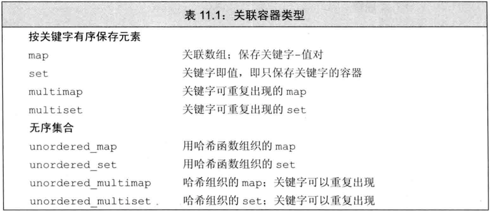
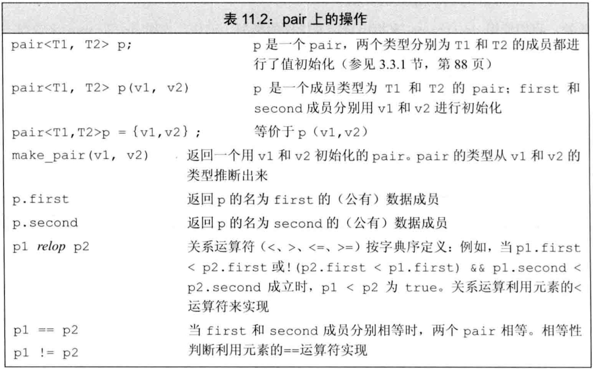
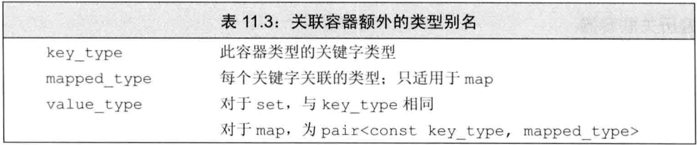
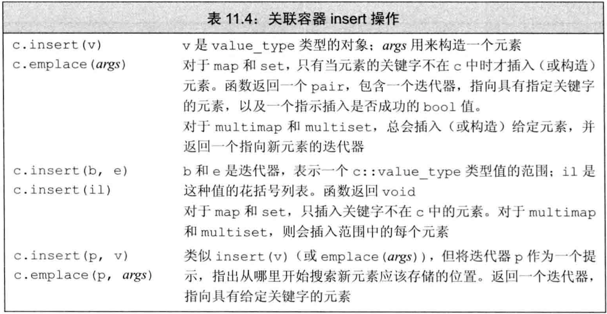
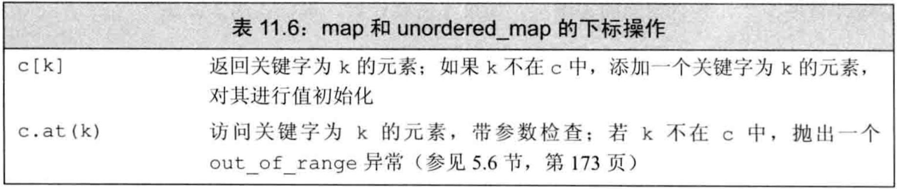
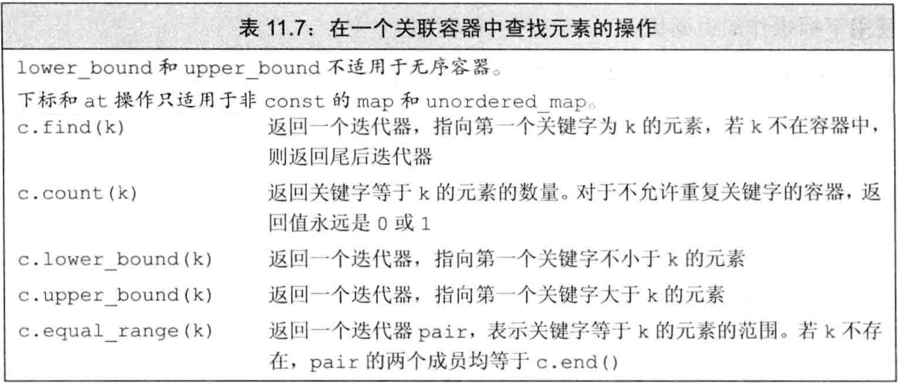
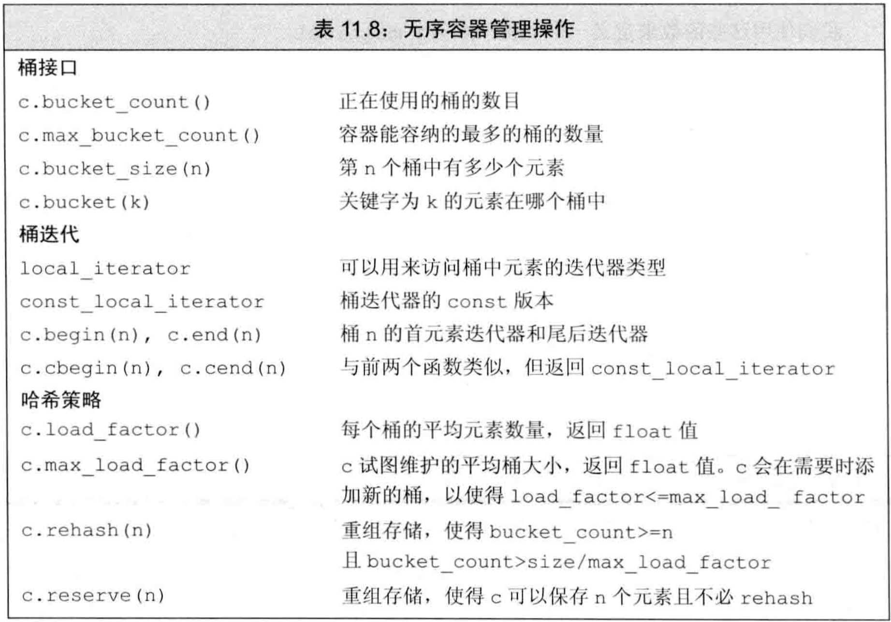

C++ primer 第11章 关联容器
文章目录
关联容器的元素按照关键字来保存和访问，而顺序容器的元素是按照在容器中的位置来保存和访问- 关联容器支持高效的关键字查找和访问
- 2种关联容器：
map中的元素是关键字-值对（key-value对），关键字作为索引，值表示与索引相关的数据set中的元素只包含关键字
- 8个关联容器：
- 按
类型：或者是map，或者是set - 按
关键字能否重复：或者是multi，或者不是 - 按
关键字是否顺序保存：或者是unordered_，或者不是
- 按
- 4个头文件：
map和multimap定义于map头文件set和multiset定义于set头文件unordered_map和unordered_multimap定义于unordered_map头文件unordered_set和unordered_multiset定义于unordered_set头文件
- 关联容器类型见表11.1 
使用关联容器
map类型常称为关联数组（字典），但其下标不必是整数，且通过关键字而不是位置来查找值set是关键字的简单集合，只想知道一个值是否存在或出现的次数时，很有用- 例子：使用map
|
|
- map是模板，使用时必须在模板参数中指定key和value类型。
- 对map使用key作为下标访问其value，若key不存在则创建一个新元素，其关键字为给定key，值初始化为0
- map的元素都是pair类型，
pair也是模板，保存两个public数据成员（first和second）。map使用的pair的first成员是关键字，second是值 - 例子：使用set
|
|
- set是模板，使用时必须在模板参数中指定元素类型
- 可以对关联容器（set和map都可）做
列表初始化 - set的
find方法返回一个迭代器，若给定关键字在set中则返回指向它的迭代器，否则返回end
关联容器概述
- 所有关联容器都支持表9.2中的通用容器操作，但不支持顺序容器特有的操作
- 关联容器的迭代器都是
双向迭代器
定义关联容器
- 定义map时需在模板参数中给出key和value的类型，定义set时需在模板参数中给出关键字类型
- 定义关联容器的4种方法：
- 关联容器都有
默认构造函数，生成空容器 - 可将关联容器初始化为另一个
同类型容器的拷贝 - 可用
元素范围初始化关联容器，只要这些元素可转换为关联容器所需类型 - C++11允许对关联容器使用值初始化（
列表初始化）
- 关联容器都有
- 对map做列表初始化时，每个元素也是一个花括号列表，其中包含两个值
- map和set的关键字必唯一，但multimap和multiset允许多个元素有相同关键字
关键字类型的要求
- set的关键字就是元素，map的关键字是元素的first成员
- 对于有序关联容器（map、multimap、set、multiset），关键字类型必须有序，默认使用元素类型的
<算符。 - 可提供自定义操作代替
<算符，要求自定义操作在关键字类型上定义严格弱序：- 两关键字不能同时“小于等于”对方
- “小于等于”具有传递性
- 若两关键字都不“小于等于”对方，则称为“等价”，“等价”具有传递性
- 若两关键字等价，则关联容器认为它们相等。用作map的key时，只能有一个value与这两个key关联，用任一个key访问都得到这个value
- 若使用自定义的严格弱序函数，则定义关联容器时，必须在模板参数中给出
该函数指针类型，在构造函数参数中给出该函数 - 例子：自定义严格弱序
|
|
pair类型
pair类型定义于utility头文件中- 一个pair保存两个public的数据成员，分别叫first和second
- pair是模板，创建时需在模板参数中指定两个数据成员的类型
- pair的默认构造函数对数据成员做
值初始化 - pair的操作在表11.2 
- 可用
make_pair函数和auto来创建pair，其类型由传入make_pair的实参（即pair的两个成员）推出 - C++11中可用返回值做列表初始化
- 例子：返回值做列表初始化
|
|
关联容器操作
- 关联容器独有的类型别名见表11.3 
- 对于set，其
key_type和value_type都是元素类型，即关键字类型。它没有mapped_type - 对于map，其
key_type是关键字类型，mapped_type是值类型，value_type是key-value对的pair类型 不可改变关键字，故关键字类型都是const：- set的
key_type和value_type都是const - map的
key_type和value_type.first都是const
- set的
- 使用这些类型别名时，需用作用域指明容器类型，例如
map<string,int>::key_type
关联容器迭代器
- 迭代器解引用
- 解引用关联容器迭代器时，得到一个类型为容器的
value_type的引用。 - set迭代器解引用得到的都是关键字引用，故都是常量引用。虽然同时存在iterator和const_iterator类型，但都不可写
- map迭代器解引用得到的是pair的引用，first为const。其iterator可写second，const_iterator不可写
- 解引用关联容器迭代器时，得到一个类型为容器的
- map和set都有
begin和end成员函数，可得到迭代器用于遍历元素 - 关联容器很少使用
泛型算法- 通常不对关联容器使用泛型算法。因为关键字是const，元素不可改变也不可重排。
- 关联容器只可使用只读算法，但这些算法在关联容器中搜索时效率低下。例如用关联容器的
find成员函数比泛型find函数快得多 - 如果真要对关联容器使用泛型算法，则只能把它当源序列，或当目的位置用inserter插入
添加元素
- 关联容器的
insert成员函数向容器中添加一个元素或元素范围 - 关联容器的insert/emplace操作见表11.4 
- 对于无重复关键字的map和set，若插入元素的key在容器中已存在，则插入失败，insert不做任何事
- insert有两个版本
- 接受一对迭代器，这些迭代器指向的类型可转为该容器的value_type
- 接受initializer_list，即花括号列表，该列表用于构造一个value_type
- 例子：对map进行insert的4种方法
|
|
- insert/emplace的返回值依赖于容器类型和参数
- 向set/map添加单一元素，则insert/emplace返回一个pair，其first为迭代器，second为bool。
- 若关键字不在容器中，则插入。first指向插入的元素，second为true
- 若关键字在容器中，则插入失败。first指向给定元素，second为false
- 向multiset/multimap添加单一元素，总是插入成功，insert/emplace返回一个迭代器指向插入的元素
- 例子：对map做insert
|
|
删除元素
- 关联容器定义了3个版本的
erase，如表11.5
- 关联容器的特殊erase操作：可提供一个关键字，删除与其相关的所有元素，并返回删除元素的数量。对于关键字不重复的容器，erase总返回0或1
map的下标操作
- map和unordered_map的下标操作如表11.6： 
- 只适用于关键字不可重复的map容器：
- map和unordered_map都有下标算符和at函数
- multimap和unordered_multimap都不支持下标，因为一个关键字可能有多个值
- 所有的set类型都不支持下标，因为没有值
- map/unordered_map下标接受一个关键字，访问与其关联的值。若关键字不在容器中，则创建元素插入容器，关联值进行
值初始化 - 例子：map用下标插入元素时值初始化为0
|
|
- 由于下标可能插入新元素，故只可对非const的map/unordered_map使用下标
- 通常解引用迭代器和下标返回的类型一样，但map/unordered_map不一样，它们解引用迭代器得到
value_type，下标得到mapped_type - map的下标返回
左值
访问元素
- 在关联容器中查找元素的方法如表11.7 
find判断一个关键字是否在容器中，若在则返回指向第一个key相同的元素的迭代器，否则返回endcount返回容器中有多少个相同的给定关键字- 查找时应用find而不是下标，因为下标的副作用会导致元素未找到时插入，即改变容器
- 若multiset/multimap中有重复关键字，则它们
相邻存放，因此可找到第一个，然后递增迭代器 lower_bound和upper_bound成员函数查找范围：- 若给定关键字在容器中，则lower_bound返回第一个匹配元素的迭代器，upper_bound返回最后一个匹配元素之后的迭代器
- 若给定关键字不在容器中，则lower_bound和upper_bound都返回指向第一个大于该关键字的元素的迭代器，该位置称为
安全插入点，即在此处insert该关键字可保持容器中关键字的顺序 - lower_bound和upper_bound都不支持无序容器
equal_range成员函数相当于用同样的关键字调用lower_bound和upper_bound，它返回一个迭代器pair。- 若关键字在容器中，则first是指向第一个匹配元素的迭代器，second是指向最后一个匹配元素之后的迭代器
- 若关键字不在容器中，则返回指向第一个大于该关键字的元素的迭代器，即安全插入点
- 例子：关联容器查找元素
|
|
一个单词转换的map
- 例子：给定缩写对照表和需要转换的文本，输出转换后的文本
//缩写对照表示例：
brb be right back
k okay?
y why
r are
u you
pic picture
thk thanks!
l8r later
//要转换文本示例：
where r u
y dont u send me a pic
k thk l8r
//转换后的文本：
where are you
why dont you send me a picture
okay? thanks! later
|
|
无序容器
- C++11定义了4个无序关联容器，它们组织元素的方式不是关键字的序，而是
哈希函数和==算符 - 使用无序容器的情形：
- 关键字不存在序
- 维护关键字的序代价较高
- 无序容器在存储上组织为一组
桶，每个桶中保存0个或多个元素。即，层次化的存储 - 无序容器使用一个
哈希函数，将关键字映射到桶。访问元素时先计算关键字的哈希值来判断在哪个桶中，再在桶内搜索。 哈希值相同的关键字放在同一桶中，因此关键字相同的元素都在同一桶中- 无序容器的性能依赖于：哈希函数的质量、桶数量、桶大小
- C++允许查询无序容器的状态，并可改变映射和存储的策略，管理桶的函数如表11.8： 
- 默认情况下，无序容器用关键字类型的
==算符比较元素，用hash<key_type>类型的对象来生成元素的哈希值。 - 标准库为
内置类型(包括指针)、string、智能指针提供了hash函数，因此可直接定义这些类型为无序容器的关键字 - 无序容器可使用自定义的==算符和哈希函数，只需在模板参数中给出函数指针类型，并在构造函数参数中给出函数指针即可
- 对于有==算符的类型，可以只自定义哈希函数
- 例子：自定义==算符和哈希函数
|
|